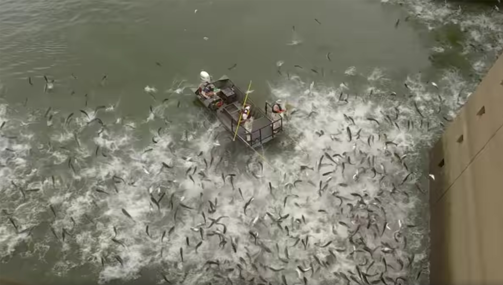

OverviewExpansion and InvasionRepercussionsSolutionsAnnotated Bibliographies
Overview
Origin
The common carp (Cyprinus carpio) is a species of fish native to Europe and Asia. Carp can be categorized into four main species: Grass, Silver, Black, and Bighead. As a whole, these carp are recognized as Asian Carp.
Blackhead Carp
The introduction of Asian Carp in the United States dates back to the 1960s, brought in order to control algae and weed growth, treat sewage, and maintain the health of agriculture ponds. Recently, Asian Carp have escaped into major ecosystems such as
the Mississippi River and Illinois River, although they are generally established in the East Coast. These rivers connect to the Great Lakes, home to environmentally sensitive organisms. Should they successfully establish themselves in
the Great Lakes, the environmental consequences would be devastating; a reason why efforts are amplifying to remove these invasive fish.
Carp species from left to right - Black, Bighead, Grass,Silver
Expansion and Invasion
Migration
The migration of Asian Carp has been the major factor influencing the affected species. Their migration started at the Mississippi River Basin, which connects to more than 31 different regions across North America, including Canada. Through this migration,
Asian Carp have been able to extend their reach to many bodies of water within the US.
The Mississippi River
One of these connections include the link between the Mississippi River to the Great Lakes (through the Illinois-Michigan Canal). The Great Lakes feature diverse species, some of which are unfortunately endangered. The emerging presence of the Asian Carp
does not make this any better, and if anything, should prompt more action to be taken towards their spread.
Human Interference
Unintentional Manipulation
The voracious eating habits of Asian Carp made them perfect candidates for agricultural purposes within the US. With this, they were transported to the US to assist combating rising algae levels and poor water quality in agricultural
farms. However, they were able to spread by water contaminated with eggs.
Fishermen come into contact with water while catching fish. If they fish in an area with a high population of Asian Carp (or at the very least an area in which Asian Carp were sighted), they run the risk of carrying their eggs
on clothing or in their boat. This can allow eggs to move from one body of water to another.
Flooding can occur, which is beyond the control of humans. This causes water levels in lakes and rivers to rise, which makes it easier for carp to jump out of blocked areas (e.g. dams) and move between bodies of water.
Several asian carp jumping in the Fox River
Intentional Manipulation
Shortly after the date of the discovered release of Asian Carp (natural release), it was found that people who understood the effects of Asian Carp were maliciously spreading the carp and their eggs to other bodies of water.
Properties of Asian Carp
Reproduction
Asian Carp have the ability to populate rapidly. Surprisingly, Asian Carp best lay their eggs in fast moving water, allowing their transport to other regions of water.
Jumping
Asian Carp have been able to cross gaps that are difficult to pass by jumping. By doing so, they are able to move through canals, rivers, and even through dams.
Repercussions
Environmental
Outcompetition
Because Asian Carp have the ability to spread and grow quickly, it is very easy for them to overtake entire habitats, thus affecting the surrounding ecosystem. The largest area of concern is the Great Lakes, which is home to at least 70 endangered species.
These species rely on plankton and other microorganisms to survive, which is what Asian Carp also tend to eat. This, paired with their staggering numbers, practically destroys any possibility of the survival of existing species.
Destruction of Ecosystems
Because Asian Carp have the ability to feed on large amounts of plankton, existing organisms within an ecosystem may die off quickly (especially endangered species). These organisms may be a dependency of other organisms, and very quickly the food chain
crumbles from the bottom up, thereby destroying that habitat.
Economic
Impact on Fishing
Fishermen rely on the ecosystem so they can make a living. As of now, there is no concern in the Great Lakes region about overfishing. However, given the rate that Asian Carp are multiplying and spreading, existing species may die completely, some of
which fishermen may need to catch.
Solutions
Raising general awareness
Whether out of carelessness, malicious intent, or ignorance, not enough people are taking the correct actions when they deal with contaminated water. Some general fishing guidelines include:
Never harvest bait from infested waters. The bait may have come into contact with carp eggs.
Do not transfer fish from one body of water to another, especially if you can't identify it. Should you catch an Asian Carp and not realize it, you run the risk of allowing the fish to escape into clean bodies of water.
Drain your boat of any water when you finish fishing (back into the same body of water the boat was in). This keeps everything that could have come from the water in that same region.
Water Treatment

'Electrofishing' in action. The boat sends a jolt of electricity and the fish are stunned out of the water.
There are various methods of treating the water to repel and mitigate the means Asian Carp use to spread. This includes:
Water Shocking/Electric Barrier - Electricity has proved to be the easiest form of protection. Simply shocking the water or placing an electric barrier downstream of a river deters the fish, preventing it from migrating to sensitive
areas. Boats have also been developed with the ability to shock the water, from which the term 'electrofishing' came from.
Bio-Poison - Scientists have been working on a poison targeted towards Asian Carp that would kill adult fish (preventing them from laying more eggs) and their eggs (preventing more fish from spawning).
Interstate Management
Content
Bibliography
Asian carp map. (n.d.). Retrieved December 18, 2019, from https://www.in.gov/dnr/fishwild/files/fw-AsianCarpMap.pdf
Grass carp in the Great Lakes region: establishment potential, expert perceptions, and re-evaluation of experimental evidence of ecological impact. (2014, March 4). Retrieved December 19, 2019, from https://www.nrcresearchpress.com/action/cookieAbsent#.XfrQHGRKjIW